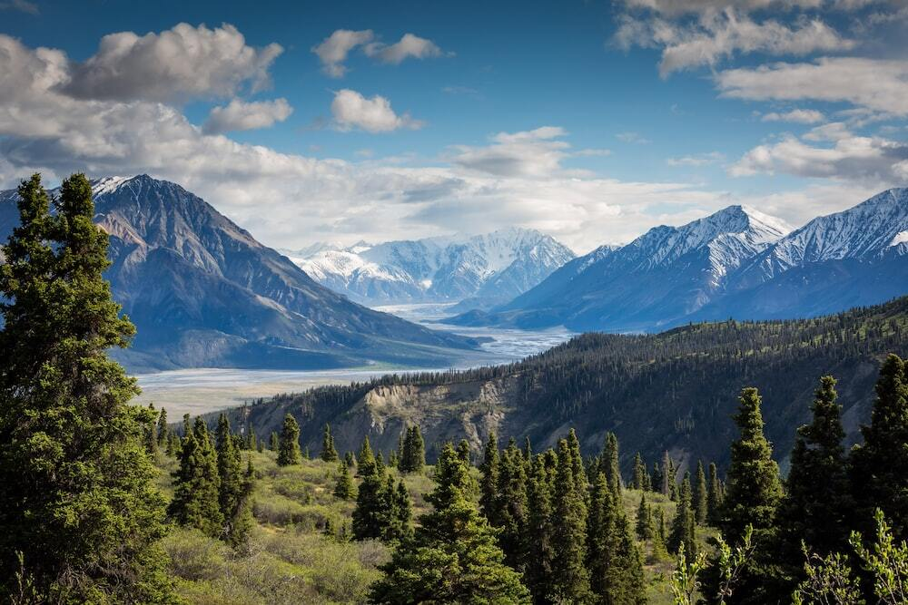

Opdracht 1
Zoek op wat lossy en lossless compression is en geef een beschrijving van beiden.
-
Lossy compression
Een codering-compressie techniek voor digitale audio en - of video signalen
waarbij er een bepaald verlies aan kwaliteit optreedt. Het gereproduceerde signaal
is niet exact gelijk aan het origineel, er is een zekere mate van verlies.
-
Lossless copmression
Type van compressie waarbij geen informatieverlies optreedt.
Welke soort compression gebruiken de jpeg, png en gif formaten?
-
JPEG
Een jpeg bestand maakt gebruik van lossy compression.
-
PNG
Een png bestand maakt gebruik van lossless compression.
-
GIF
Een gif bestand maakt gebruik van lossless compression.
Wat zou er gebeuren als je een afbeelding herhaaldelijk bewerkt en bewaart in een lossy formaat?
Wanneer je door middel van lossy compressie een afbeelding comprimeert, bepaal je zelf de 'trade-off'
tussen bestandsgrootte en de beeldkwaliteit (v.: kleinere bestanden = slechtere beeldkwaliteit).
Des te vaker je een enkele afbeelding bewerkt en opslaat, des te slechter de kwaliteit van de afbeelding wordt.
Opdracht 2
Vergelijking kwaliteit en bestandgrootte.
Originele afbeelding:

-
Quality setting 90: De kwaliteit is naar mijn zien even goed als het originele bastand en de
bestandgrootte is ook gelijk gebleven.

-
Quality setting 70: De kwaliteit is iets slechter dan het originele bestand en
de bestandgrootte is met 27kb verminderd.

-
Quality setting 40: De kwaliteit is een heel stuk slechter dan het originele bestand
en de bestandgrootte is ditmaal met 76 kb verlaagd in vergelijking met het origineel.

Uitbreiding:
Originele afbeelding:

-
Quality setting 70: De kwaliteit van de schermafbeelding is iets verlaagd maar alles is
nog steeds goed zichtbaar en leesbaar.

-
Quality setting 40: De kwaliteit is nu al een stukje slechter maar nog steeds vind ik dat
de tekst op de afbeelding nog leesbaar is. Je merkt wel dat het een beetje wazig wordt rond de tekst

-
Quality setting 10: Ik gebruikte ook eens de laagst mogelijke setting en dit was het resultaat:
De tekst wordt volledig onleesbaar.